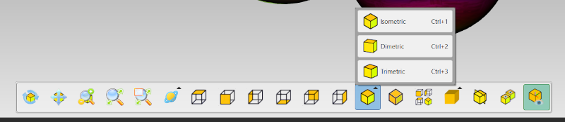
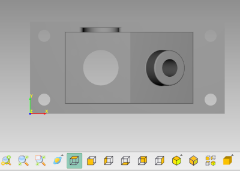
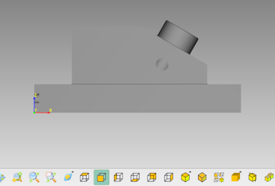
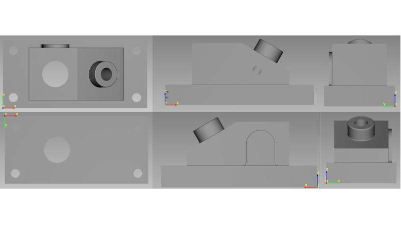
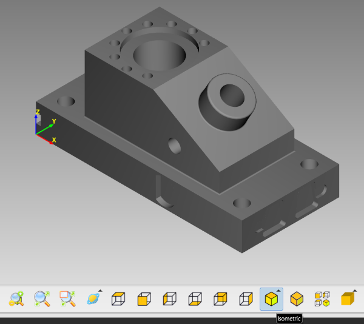
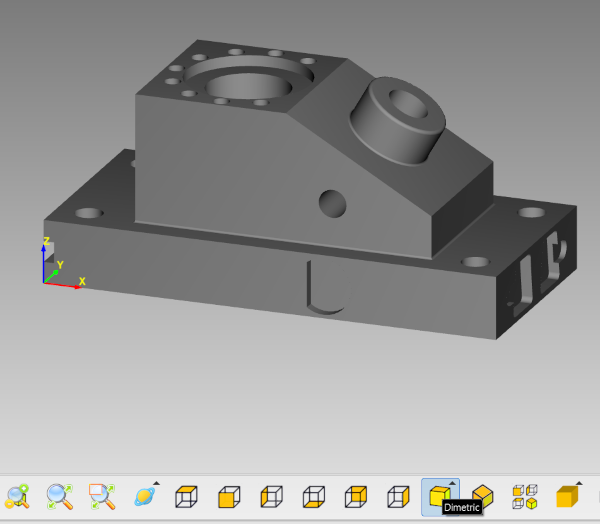
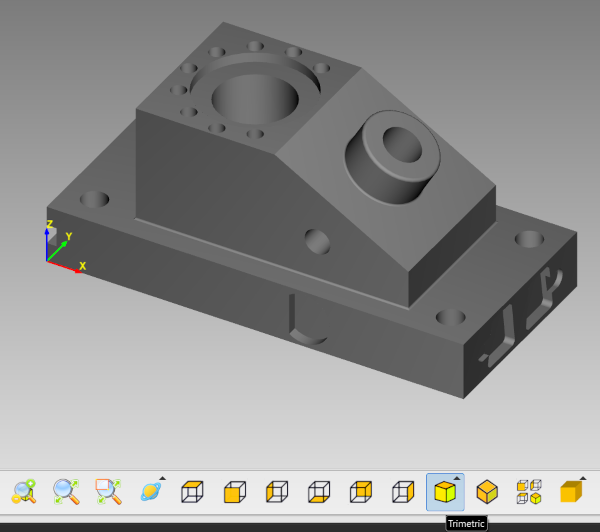
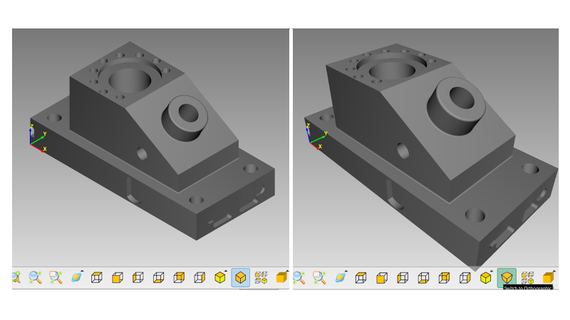
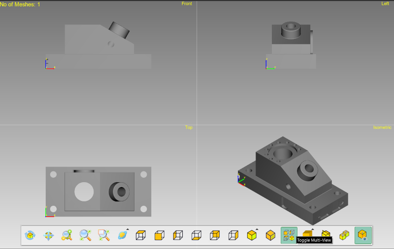

Lesson 5 of 14
Introduction
View modes let you quickly orient your camera to standard positions, perfect for technical drawings, presentations, or examining models from specific angles.
Accessing View Modes
View modes are available from the View Toolbar:
Step 1: Show Toolbar
Move your mouse to the bottom edge of the viewport to reveal the toolbar.
Step 2: Find View Buttons
Look for buttons labeled 'Top', 'Front', 'Left', etc., and the 'Axonometric View' dropdown button.

Screenshot: tutorial_05_toolbar_views.png
View toolbar with orthographic and axonometric view buttons highlighted
Orthographic Views
Six standard orthographic views:
Step 1: Top View
Click 'Top' to view the model from directly above (looking down the Z-axis).

Screenshot: tutorial_05_top_view.png
Top View
Step 2: Front View
Click 'Front' to view from the front (looking along the Y-axis).

Screenshot: tutorial_05_front_view.png
Front View
Step 3: Left View
Click 'Left' to view from the left side (looking along the X-axis).
Step 4: Additional Views
Also available: 'Bottom', 'Rear', and 'Right' views for complete coverage.

Screenshot: tutorial_05_six_views.png
Grid showing all six orthographic views
Top, Front, Left
Bottom, Rear, Right
Orthographic views are particularly useful for technical drawings and measurements as they show true dimensions without perspective distortion.
Axonometric Views
Three-dimensional standard views:
Step 1: Isometric View
Click the Axonometric button and select 'Isometric'. This shows the model at equal angles (120°) between all three axes.

Screenshot: tutorial_05_isometric.png
Isometric Projection
Step 2: Dimetric View
Select 'Dimetric' for a view where two axes are equally foreshortened.

Screenshot: tutorial_05_dimetric.png
Dimetric Projection
Step 3: Trimetric View
Select 'Trimetric' for a view where all three axes are foreshortened differently.

Screenshot: tutorial_05_trimetric.png
Trimetric Projection
Axonometric views are great for technical illustrations and engineering drawings as they show 3D structure while maintaining parallel lines.
Projection Toggle
Switch between orthographic and perspective projection:
Step 1: Find Toggle Button
Look for the projection toggle button in the toolbar (shows camera icon).
Step 2: Orthographic vs Perspective
Orthographic: Parallel lines stay parallel, no vanishing point. Objects same size regardless of distance.
Perspective: Realistic view with vanishing points. Distant objects appear smaller.

Screenshot: tutorial_05_ortho_vs_persp.png
Side-by-side comparison: Orthographic (left) and Perspective (right) projection
Use Orthographic for technical work and measurements. Use Perspective for realistic presentations and visualization.
Multi-View Mode
See multiple views simultaneously:
Step 1: Enable Multi-View
Click the 'Multi-View' toggle button in the toolbar.
Step 2: Four Viewports
The viewport splits into four: Top, Front, Right, and Isometric views.
Step 3: Independent Navigation
You can navigate independently in each viewport. Selection is synchronized across all views.

Screenshot: tutorial_05_multiview.png
Four-viewport layout showing Top, Front, Right, and Isometric views
Multi-view mode is excellent for precision modeling work and understanding complex geometries.
View Animation
When switching views:
- The camera smoothly animates to the new position
- This helps you maintain orientation and context
- You can interrupt the animation by interacting with the view
Use Cases
Top/Front/Side Views: Checking alignment, dimensions, symmetry
Isometric View: General 3D overview, presentations, default starting view
Dimetric/Trimetric: Technical illustrations, engineering drawings
Multi-View: Precision modeling, CAD work, complex assemblies
Practice Exercise
Try this exercise:
- Open a model (preferably mechanical or architectural)
- Cycle through all six orthographic views (Top, Front, Left, Bottom, Rear, Right)
- Switch to Isometric view
- Try Dimetric and Trimetric views
- Toggle between Orthographic and Perspective projection
- Enable Multi-View mode and practice navigating in each viewport
- Return to single viewport mode
- Notice how each view mode is useful for different purposes
Keyboard Shortcuts
| Key | View |
|---|
| Ctrl+T | Top |
| Ctrl+F | Front |
| Ctrl+L | Left |
| Ctrl+B | Bottom |
| Ctrl+R | Rear |
| Ctrl+J | Right |
| Ctrl+1 | Isometric |
| Ctrl+2 | Dimetric |
| Ctrl+3 | Trimetric |
| Ctrl+P | Toggle Perspective/Ortho |
| Ctrl+M | Multi-View Mode |